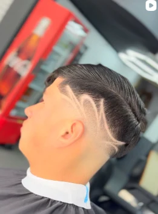
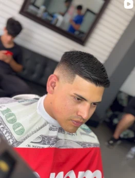
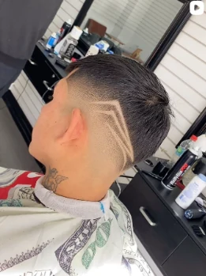
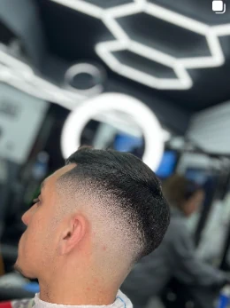
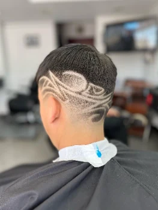
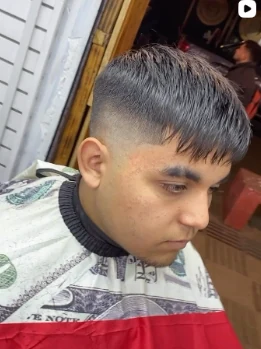
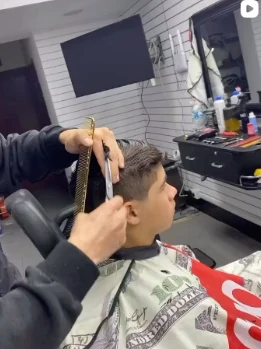
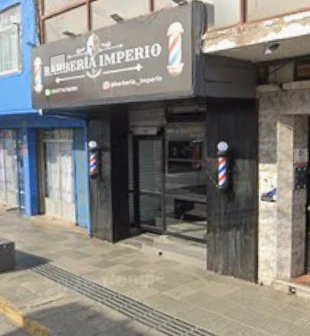

BARBERÍA IMPERIO · LLOLLEO, SAN ANTONIO
El detalle
hace la diferencia.
Precisión, estilo y carácter. Descubre Barbería Imperio y encuentra tu próximo look con la confianza de un corte bien hecho.

EN CADA DETALLE.


✦ IMPERIO
STYLE CULTURE
STYLE CULTURE
01 / NUESTRA ESENCIA
Tradición en las manos.
Futuro en la experiencia.
La esencia de Imperio ya existe: su emblema, su local y los cortes que sus barberos muestran cada día. Nuestra propuesta digital respeta esa identidad y crea una forma más fácil de descubrir, elegir y solicitar una hora.
02 / PORTAFOLIO REAL
MAESTRÍA EN CADA PERFIL
Nuestro trabajo.
Selección de fotografías tomadas de la captura de Instagram proporcionada para esta demo. Las imágenes originales se necesitan para producción.

IMPERIO / 002Fade definido
IMPERIO / 004Diseño artístico
IMPERIO / 006Textura y formaEl trabajo habla por nosotros.VER MÁS EN INSTAGRAM ↗
03 / EXPERIENCIAS
ELIGE TU PRÓXIMO ESTILO
Un corte. Tu sello.
Estas categorías describen los trabajos visibles en el portafolio. Servicios, duración y precios definitivos deben confirmarse con la barbería.
01
Corte de cabello
Cortes personalizados, líneas definidas y terminaciones cuidadas.
02
Degradado / Fade
Transiciones precisas y distintas alturas según el estilo buscado.
03
Diseño personalizado
Líneas y patrones inspirados en los trabajos reales de Imperio.
* Catálogo referencial para la demo. No implica disponibilidad real ni constituye una lista oficial de precios.

04 / EL EQUIPOEl talento
LAS MANOS DETRÁS DEL ESTILO
El talento
tiene nombre.
Muy pronto cada barbero podrá tener su propio perfil, galería de trabajos y disponibilidad. No publicaremos nombres, fotografías de perfil o especialidades sin confirmarlos.
PERFILES DEL EQUIPOPróximamenteNombre · Especialidades · Portafolio · Agenda personal
05 / EL FUTURO DEL ESTILO
✦ ASESOR DE ESTILO / DEMOSTRACIÓNTu próximo corte,
Tu próximo corte,
con otra mirada.
Una experiencia de asesoría que combinará tus preferencias con el criterio del barbero. Comienza probando esta recomendación ilustrativa.
- Explicación del estilo recomendado
- Historial de preferencias, con tu permiso
- Vista previa con IA en una futura versión
Esta demo utiliza reglas sencillas, no inteligencia artificial ni análisis de imágenes. No solicita fotografías.
06 / TU PRÓXIMA VISITAEl buen estilo
EL SIGUIENTE PASO
El buen estilo
se agenda.
Indica qué corte buscas y cuándo te gustaría visitarnos. Prepararemos un mensaje para que lo envíes a nuestro Instagram.
IMPORTANTE · DEMO
Esta versión no comprueba disponibilidad ni registra reservas. Tu hora solo quedará acordada cuando la barbería te confirme directamente.
07 / NOS ENCUENTRAS
TE ESPERAMOS EN IMPERIO
El lugar donde
empieza tu estilo.
DIRECCIÓN SEGÚN INSTAGRAMJosé Miguel Carrera 315
Llolleo, San Antonio
HORARIO INFORMADO EN INSTAGRAMLunes a sábado
10:00–19:30 h · Domingo no informado como abierto
